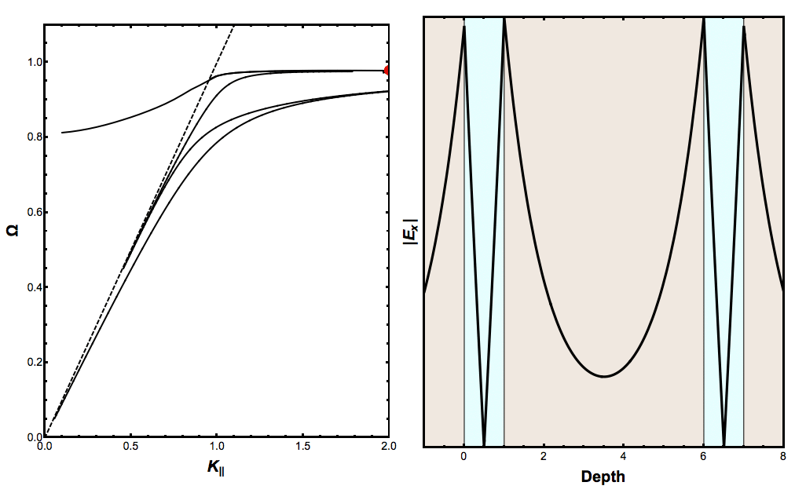
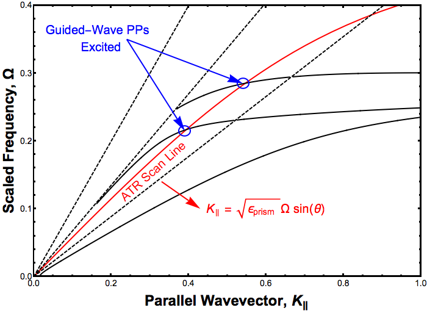
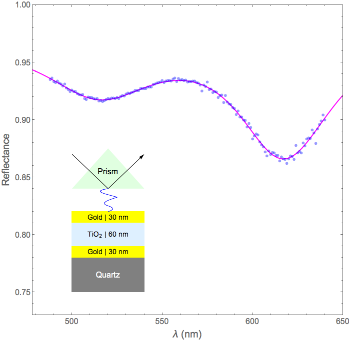

guided wave plasmon polaritons

Guided-Wave Plasmon Polaritons are collective excitations arising from the coupling of electromagnetic waves (photons) with charge density oscillations (plasmons).
In the video, the right panel shows the amplitude of the plasmon polariton electric field in a GaAs (light blue) and vacuum (grey) thin film structure. The left shows the dispersion relation (relating momentum and energy) for the same structure. Solid lines show plasmon polariton modes and the dashed line is for vacuum.
Once we probe past the vacuum light line (entering the classically 'forbidden' region), the plasmon polariton goes from a surface mode (the field is strongest at the surfaces) to a guided-wave mode (concetrated in the bulk of the medium).


The benefit of a guided-wave mode is that the energy from the field sustains less loss traveling through the bulk of material, relative to traveling along the surface. An increase in efficiency makes thin film structures even more useful for applications such as solar cell backings (to capture some of the energy that would be lost from reflection) and in medical devices called biosensors.
The figure on top shows a more detailed dispersion relation for the thin film structure pictured in the lower figure. The light lines, from least to most steep, are for the spacer layer, the substrate, and air. When the mode crosses the spacer layer light line, the guided-wave modes are excited. This can be done using ATR (attenuated total reflectance). This method reflects light off the base of a prism, which couples a decaying electromagnetic wave to the structure. This decaying wave loses momentum, allowing the coupling to occur.
The lower figure shows an ATR scan in observation (blue circles) and theory (pink line) for the thin film structure shown bottom-left. This shows the amount of light after reflection as a function of wavelength. The two dips are where guided-wave modes are excited. The theory is a classic electricity and magnetism boundary value problem. With good models for the structure's materials, the theory can reproduce experiment quite well.
No paper from me on this work, but more information can be found here.